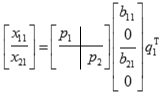

Intel® oneAPI Math Kernel Library Developer Reference - Fortran
Simultaneously bidiagonalizes the blocks of a tall and skinny matrix with orthonormal columns.
call sorbdb4( m, p, q, x11, ldx11, x21, ldx21, theta, phi, taup1, taup2, tauq1, phantom, work, lwork, info )
call dorbdb4( m, p, q, x11, ldx11, x21, ldx21, theta, phi, taup1, taup2, tauq1, phantom, work, lwork, info )
call cunbdb4( m, p, q, x11, ldx11, x21, ldx21, theta, phi, taup1, taup2, tauq1, phantom, work, lwork, info )
call zunbdb4( m, p, q, x11, ldx11, x21, ldx21, theta, phi, taup1, taup2, tauq1, phantom, work, lwork, info )
The routines ?orbdb4/?unbdb4 simultaneously bidiagonalize the blocks of a tall and skinny matrix X with orthonormal columns:

The size of x11 is p by q, and x12 is (m - p) by q. m-q must not be larger than q, p, or m-p.
q≤ min(p, m - p, m - q) |
?orbdb1/?unbdb1 |
p≤ min(q, m - p, m - q) |
?orbdb2/?unbdb2 |
m - p≤ min(p, q, m - q) |
?orbdb3/?unbdb3 |
m - q≤ min(p, q, m - p) |
?orbdb4/?unbdb4 |
The orthogonal/unitary matrices p1, p2, and q1 are p-by-p, (m-p)-by-(m-p), (m-q)-by-(m-q), respectively.
p1, p2, and q1 are represented as products of elementary reflectors. See the description of ?orcsd2by1/?uncsd2by1 for details on generating p1, p2, and q1 using ?orgqr and ?orglq.
The upper-bidiagonal matrices b11 and b12 of size (m-q) by (m-q) are represented implicitly by angles theta(1), ..., theta(q) and phi(1), ..., phi(q-1). Every entry in each bidiagonal band is a product of a sine or cosine of theta with a sine or cosine of phi. See [Sutton09] or the description of ?orcsd/?uncsd for details.
INTEGER. The number of rows in x11 plus the number of rows in x21.
INTEGER. The number of rows in x11. 0 ≤p≤m.
INTEGER. The number of columns in x11 and x21. 0 ≤q≤m and 0 ≤m-q≤ min(p,m-p,q).
REAL for sorbdb4
DOUBLE PRECISION for dorbdb4
COMPLEX for cunbdb4
DOUBLE COMPLEX for zunbdb4
Array, DIMENSION (ldx11,q).
On entry, the top block of the orthogonal/unitary matrix to be reduced.
INTEGER. The leading dimension of the array X11. ldx11≥p.
REAL for sorbdb4
DOUBLE PRECISION for dorbdb4
COMPLEX for cunbdb4
DOUBLE COMPLEX for zunbdb4
Array, DIMENSION (ldx21,q).
On entry, the bottom block of the orthogonal/unitary matrix to be reduced.
INTEGER. The leading dimension of the array X21. ldx21≥m-p.
REAL for sorbdb4
DOUBLE PRECISION for dorbdb4
COMPLEX for cunbdb4
DOUBLE COMPLEX for zunbdb4
Workspace array, DIMENSION (lwork).
INTEGER. The size of the work array. lwork≥m-q
If lwork = -1, then a workspace query is assumed; the routine only calculates the optimal size of the work array, returns this value as the first entry of the work array, and no error message related to lwork is issued by xerbla.
On exit: the columns of tril(x11) specify reflectors for p1 and the rows of triu(x11,1) specify reflectors for q1.
On exit, the columns of tril(x21) specify the reflectors for p2
REAL for sorbdb4
DOUBLE PRECISION for dorbdb4
COMPLEX for cunbdb4
DOUBLE COMPLEX for zunbdb4
Array, DIMENSION (q). The entries of bidiagonal blocks b11 and b21 can be computed from the angles theta and phi. See the Description section for details.
REAL for sorbdb4
DOUBLE PRECISION for dorbdb4
COMPLEX for cunbdb4
DOUBLE COMPLEX for zunbdb4
Array, DIMENSION (q-1). The entries of bidiagonal blocks b11 and b21 can be computed from the angles theta and phi. See the Description section for details.
REAL for sorbdb4
DOUBLE PRECISION for dorbdb4
COMPLEX for cunbdb4
DOUBLE COMPLEX for zunbdb4
Array, DIMENSION (p).
Scalar factors of the elementary reflectors that define p1.REAL for sorbdb4
DOUBLE PRECISION for dorbdb4
COMPLEX for cunbdb4
DOUBLE COMPLEX for zunbdb4
Array, DIMENSION (m-p).
Scalar factors of the elementary reflectors that define p2.REAL for sorbdb4
DOUBLE PRECISION for dorbdb4
COMPLEX for cunbdb4
DOUBLE COMPLEX for zunbdb4
Array, DIMENSION (q).
Scalar factors of the elementary reflectors that define q1.REAL for sorbdb4
DOUBLE PRECISION for dorbdb4
COMPLEX for cunbdb4
DOUBLE COMPLEX for zunbdb4
Array, DIMENSION (m).
The routine computes an m-by-1 column vector y that is orthogonal to the columns of [ x11; x21 ]. phantom(1:p) and phantom(p+1:m) contain Householder vectors for y(1:p) and y(p+1:m), respectively.
INTEGER.
= 0: successful exit
< 0: if info = -i, the i-th argument has an illegal value.